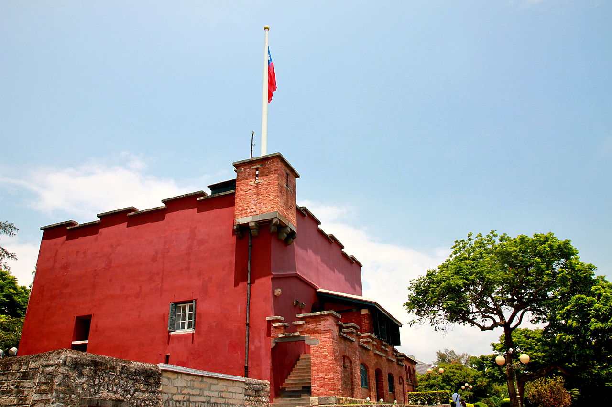
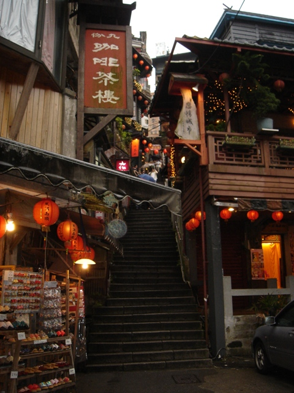
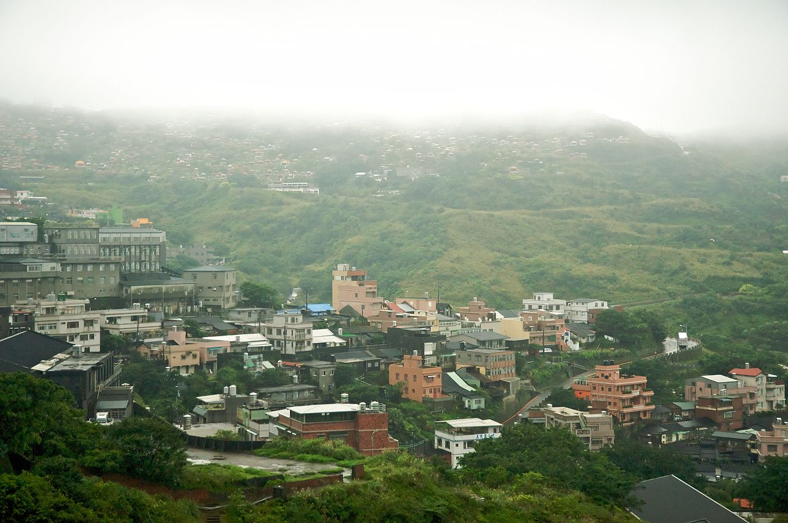

:doodle {
@grid: 3 / 100vmax;
}
--scale: @rand(0.5, 1.5);
background-image: linear-gradient(rgba(0,0,0,0.3),rgba(0,0,0,0.3)),url( ./img/@pick(1, 2).png );
opacity:0.4;
background-size: contain;
background-repeat: no-repeat;
transform: scale( var(--scale) );
@place-cell: @rand(0, 100)% -100px;
@size: 256px 170px;
animation-name: star;
animation-duration: 3s;
animation-iteration-count: infinite;
animation-delay: @rand(0, 2)s;
animation-timing-function: ease-in;
@keyframes star {
0%{
top: -200px;
transform: scale( var(--scale) ) ;
}
50%{
transform: scale( var(--scale) ) ;
}
100%{
top: calc(100vh + 200px);
transform: scale( var(--scale) ) ;
}
}

淡水区（たんすい-く）
台湾新北市の市轄区。近代には清朝の条約港として台湾を代表する港町でもあった。

九份（きゅうふん、ジォウフェン）
台湾北部の港町基隆市の近郊、新北市瑞芳区に位置する山あいの町である。

金瓜石鉱山（きんかせき こうざん）
台湾北部の新北市瑞芳区（旧台北州基隆郡）にあった金鉱山。かつては、東北アジア第1の金山と呼ばれ、非常に栄えた。現在は廃鉱となっているものの、観光地化されている。ここでは鉱脈発見に伴い生まれ、鉱山と共に発展した、金瓜石の街についても併せて記載している。
Previous
Next
淡水区（たんすい-く）
もともと台湾原住民平埔族ケタガラン族が住み、その言葉でホオベエと称され、台湾語音の漢字で滬尾（Hou7-be2）あるいは虎尾（Hou2-be2）と書かれた。
1624年にマニラからスペイン人が進出し、この地を占領してサン・ドミンゴ要塞を築いた。しかし1642年には台湾南部を占領するオランダ東インド会社がこれを駆逐し、要塞を再建した。サン・ドミンゴ要塞は後の紅毛城である。
九份（きゅうふん、ジォウフェン）
その昔、九份は台湾の一寒村に過ぎなかったが、19世紀末に金の採掘が開始されたことに伴い徐々に町が発展し、日本統治時代に藤田組によりその最盛期を迎えた。九份の街並みは、日本統治時代の面影を色濃くとどめており、路地や石段は当時に造られたものであり、酒家（料理店）などの建物が多数残されている。
しかし、第二次世界大戦後に金の採掘量が減り、1971年に金鉱が閉山されてから町は急速に衰退し、一時人々から忘れ去られた存在となっていた。
金瓜石鉱山（きんかせき こうざん）
記録によれば当時の金瓜石の山の標高は海抜約660mで、現在よりも80m程高かったという。直径100m近い巨大な円筒型の岩山がそびえ立っていたことになる。その巨岩が瓜のような形をしており、また金を多く含んでいたので「金の瓜の石」即ち金瓜石と呼ばれ、それがそのまま地名となったと伝わる。台湾の言葉で南瓜（かぼちゃ）のことを金瓜を呼ぶが、金瓜石の山がかぼちゃの様な形をしているので金瓜石と呼ぶのだ、というのは誤りである。
1890年（明治23年）、基隆川に架ける鉄道橋工事の最中、作業員によって渓流から砂金が発見された。以後猴硐溯から小粗坑溪、大粗坑溪に沿って上流への鉱脈探索が進められ、1893年には九份（きゅうふん）にて金鉱を発見、一躍ゴールドラッシュの様相を呈した。翌1894年には金瓜石でも金鉱が発見されたが、当時日清戦争などで清国政府は鉱山の管理どころでなく、ほぼ放任状態だったという。